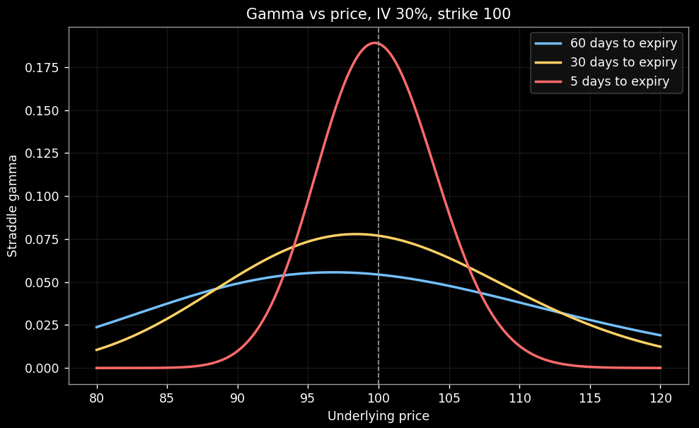
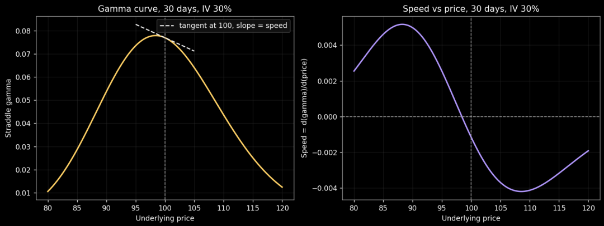
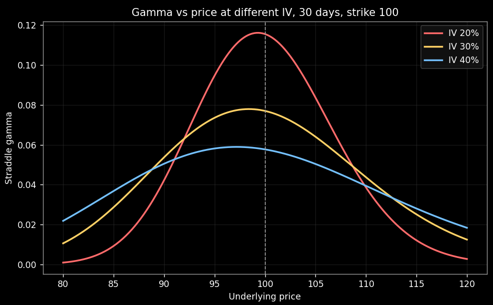
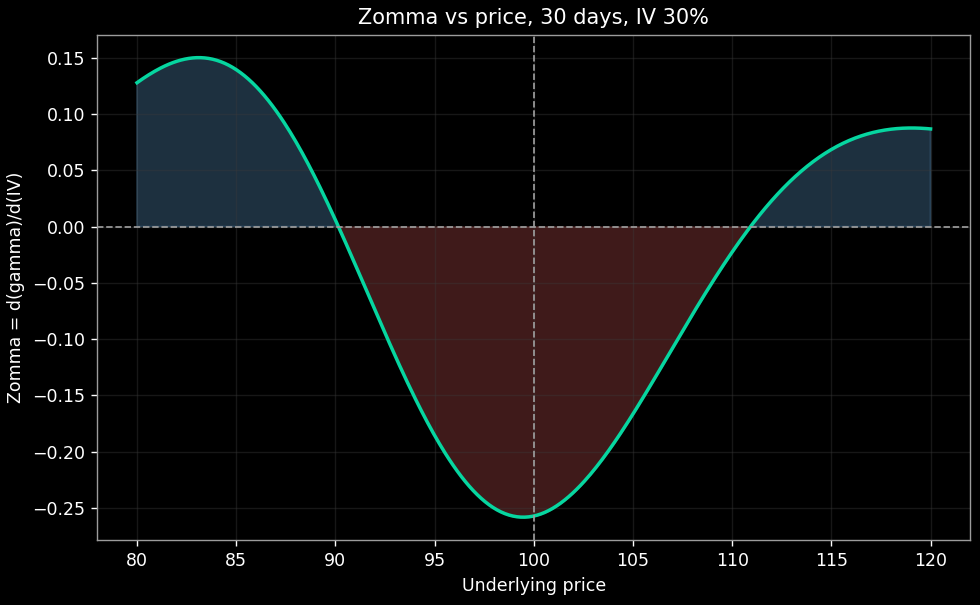
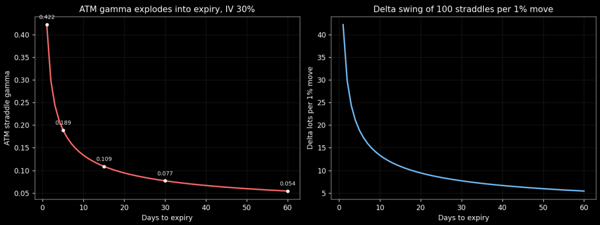
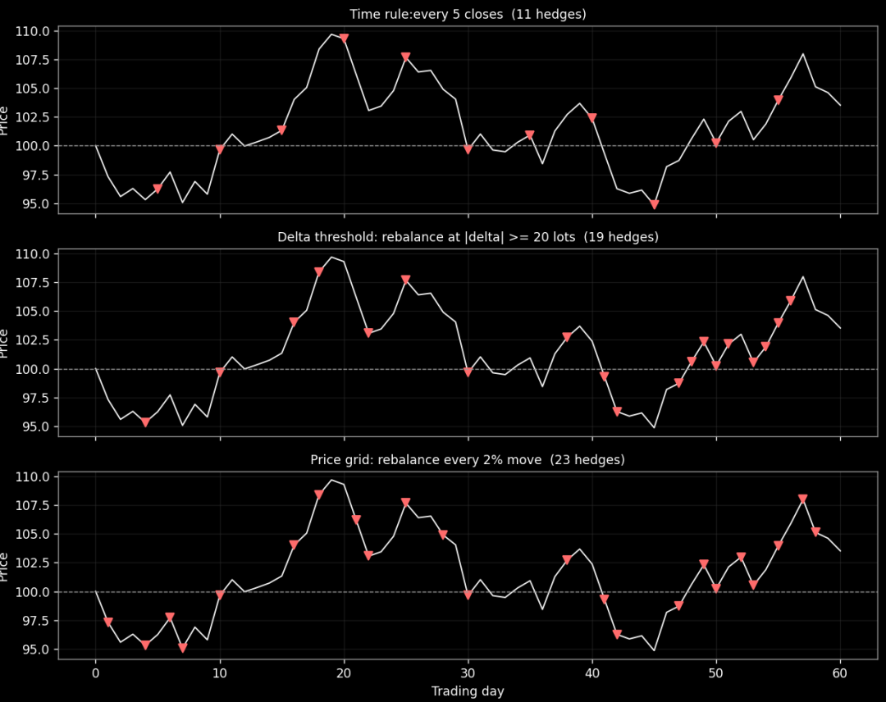

希腊字母是一层一层求导求出来的。delta是一阶，告诉你标的价格动一块，你的持仓市值动多少。gamma是二阶，告诉你价格动一块，delta动多少。再往下还有一层，三阶，名字一个比一个唬人，speed、 zomma、 color、 ultima、 veta，一大串。别被名字吓到，这一大串里真正干活的只有前三个，而且它们三个合起来只回答一个问题，你的gamma接下来会怎么变。
这个问题听起来学术，落地处却非常具体，就一个，你的对冲频率该怎么定。做市商拿这三个字母排产，普通交易者不需要亲手算它们的数值，但必须懂它们的意思，因为它们会在三个不同的场合提醒你改节奏。还是老样子文末附完整代码，复制就能跑出全部图和全部数字。
我们还是按照标的价格100，你持有平值straddle做震荡收割，也就是同时持有行权价100的call和put，价格每来回摆动一次你就对冲一次，从摆动里刮钱Gamma Scalping。这个仓位赚钱靠的不是方向，是gamma，gamma越大，同样一段摆动刮出来的钱越多。把gamma想象成收割机的发动机排量，排量大的机器过一遍地收得多。
speed：价格跑出去一段 发动机还剩几成排量
建仓那天gamma是多少，软件上直接查得到。麻烦在于这个数不是焊死的，价格一动它就变。变得多快，就是speed要回答的问题。先看Figure1。

横轴是标的价格，纵轴是straddle的gamma，隐含波动率固定30%。三条线是三个期限，蓝色60天，黄色30天，红色5天。先看形状，三条都是钟形，峰都顶在行权价100附近，价格贴着行权价的时候gamma最大，离得越远gamma越小。再看高矮，蓝线的峰只有0.054，红线的峰0.189，三倍多，越临近到期，gamma越往行权价这一个点上集中。最后看胖瘦，红线又窄又尖，蓝线又宽又平，同样偏离行权价5个点，蓝线几乎没感觉，红线已经塌下去一半。
把数字摆出来更直观。30天的黄色这条，价格100时gamma是0.077，价格走到105只剩0.064，少了17%，走到110只剩0.044，少了43%。红色的5天这条，价格100时gamma高达0.189，走到105只剩0.090，腰斩还多，走到110只剩0.013，基本归零。注意两种情况下价格走的距离一模一样，都是5个点10个点，gamma的伤亡完全不是一个量级。差距来自期限，期限越近，gamma对价格位移越敏感。
这个敏感度本身就是speed，gamma对标的价格再求一次导。我们在Figure2把它画出来。

左边还是30天的gamma曲线，多了一条浅色虚线，它是曲线在价格100这一点的切线，切线的斜率就是speed。右边是speed自己的完整形状。读右边这张图，gamma峰顶附近speed是零，因为峰顶处曲线是平的。往两边走，speed的绝对值迅速放大，对应钟形最陡的两腰。平值straddle其实坐在峰顶右侧的腰上，所以价格每往上挪一点gamma都在漏，价格往下走一点gamma反而还在涨，一直涨到峰顶为止。
做市商拿speed定对冲带宽度。对冲带解释一下，做市商手里的delta时时刻刻在变，不可能每变一点都对冲，手续费和对价都吃不起，所以划一个忍耐区间，delta偏离零不出这个区间就扛着不动手，冲出去了才对冲回零。区间宽度依据gamma定，gamma大delta翻得快，区间就得窄，不然一眨眼扛过头。问题来了，gamma随价格位置变，价格跑出去一段gamma塌了，原先定好的带宽就失真。speed告诉做市商的就是gamma随位移衰减的速度，衰减快的合约，带宽要跟着价格位置实时收放，衰减慢的，一条带能用很久。
你不做市，speed对你就一句话，价格跑出去一段之后，你的收割机还剩几成排量。剩5天的平值straddle，价格走5个点排量剩一半，走10个点排量基本归零。这时候要么把行权价挪回价格附近重新建仓，要么接受这台机器已经不出活了，没有第三个选项。因此，对你我而言，持有的从来不是gamma这个数字，而是gamma在行权价附近的浓度，价格每远离一格浓度稀一格，越临到期稀得越快，speed就是稀释速度。
zomma： IV变了 gamma仓位跟着变
那么同一个仓位，放在不同的隐含波动率环境里一样大吗。不一样，而且差别不小。看Figure3。

横轴纵轴和Figure1一样，期限固定30天，三条线对应IV 20%红色，30%黄色，40%蓝色。变化规律和Figure1反过来，IV升高，钟形被压扁，行权价附近的gamma下降，两翼的gamma上升。IV降低，钟形收缩变尖，gamma往行权价集中。道理直白，IV是市场给波动范围定的预期，预期范围大，行权价这个位置就没那么特殊，gamma摊开到两边，预期范围小，市场认为价格就钉在附近，gamma全挤到行权价上。
平值这一点上的变化率叫zomma，gamma对IV求导。我们注意它的符号，平值位置zomma是负的，IV涨，你的平值gamma反而缩。数字摆出来，30天的平值straddle，IV 20%时gamma是0.116，IV 25%是0.092，IV 30%是0.077，IV 40%只剩0.058。可以这样记，平值gamma和IV成反比，IV涨三成gamma掉四分之一，IV每抬高一个百分点gamma缩水约3%。Figure4是zomma的完整形状，中间负两边正，平值附近负得最深，两翼是正的，IV升高两翼的gamma确实在涨，只是那点gamma对你没什么用，因为价格很少跑到那去。

Zomma这个字母什么时候用得着，事件前后。财报，议息，非农等等，这类事件之前，避险和对赌的买盘把IV抬上去，你这时候建long gamma仓，名义仓位看着不小，gamma含金量其实是打折的，因为高IV把gamma压扁了。事件落地，IV崩塌，gamma弹回来，可价格波动往往也跟着停了，gamma弹回来也没东西可收。一升一降哪头占上风，拍脑袋容易翻车，zomma就是把第一件事量化的工具，拿它乘上你预期的IV变动，就知道gamma仓位会变多少，再对照你对事件后真实波动的判断，仓位该拿多大就有谱了。
所以需要你记住的是，高IV环境里买进去的long gamma是虚胖仓位。IV贵有两层代价，第一层大家都知道，事件后IV回落，vega上亏一笔。第二层就是zomma告诉你的，高IV状态下每一单位真实波动能兑换的对冲收益本来就少，因为gamma被压扁了。名义仓位和真实gamma仓位是两回事，zomma是两者之间那把换算尺。
color： 临到期 gamma爆炸有多快
那么仓位一动不动放着，时间流逝本身会不会改变gamma。会，而且改得非常凶。这个变化率叫color。看我们下面的Figure5左边。

横轴是距到期的天数，注意左边是1天，右边是60天，纵轴是平值straddle的gamma，IV固定30%。整条曲线往左上方竖起来，60天的时候0.054，30天0.077，15天0.109，5天0.189，最后一天0.422。规律是平值gamma大致和剩余时间的平方根成反比，剩余时间每缩短到四分之一，gamma翻一倍。从60天到30天，时间腰斩，gamma涨了四成多。从5天到1天，gamma又翻一倍多。最后那一段几乎是竖着涨的。
右边这张图，则把gamma翻译成操作语言。100手平值straddle，价格每动1%，你的delta变动等于gamma乘位移，60天的时候一个1%的波动给你带来5.4手delta，30天7.7手，5天18.9手，到期前一天42.2手。同样一个隔夜跳空1%，最后一天甩给你的方向暴露是两个月前的八倍。仓位还是那100手，一手没加，风险密度自己涨了八倍。
这就是临到期必须提高对冲频率的理论依据，也是color这个字母存在的意义。它量化的是gamma随时间膨胀的速度，而这个膨胀在最后阶段是抛物线式的。一天收盘看一次的粒度，在前两周绰绰有余，在最后一周等于裸奔，因为同样24小时里装的gamma已经不是同一个量级。补一句，这个爆炸只在平值附近成立，虚值和实值位置的gamma随到期是衰减的，两翼的机器越到后期越不出活，color主要服务行权价附近那一小段。
所以说，临到期不是时间过得快，是你的gamma在膨胀。日历每天走一格，风险密度每天跳一截，对冲频率要跟着gamma走，不能跟着日历走。
落地：三种再平衡规则
我们现在把gamma的三个变化来源讲完了，价格位移，IV，时间。字母讲完最终都要变成动作，动作只有一类，什么时候对冲，多久对冲一次。规则一共三个：定时间隔，delta阈值，价格网格。本质上是把对冲频率挂在三个不同的锚上。
定时间隔，把频率挂在日历上。每隔固定时间对冲一次，比如每天收盘，或者每五天收盘。优点是省心，可计划，不用盯盘。缺点是市场加速的时候它按老黄历办事，临到期gamma抛物线式膨胀，固定时间切片里装的风险一天比一天大，最后几天一个间隔漏掉的方向暴露能顶前两周好几倍。
delta阈值，把频率挂在风险上。方向暴露的绝对值碰到设定值就对冲回零，比如20手。市场动得快它自动跟得快，市场安静它自动休息，最大方向暴露被锁死在阈值附近。代价是行情剧烈的阶段对冲次数明显上升，操作难度没法事先计划。
价格网格，把频率挂在位移上。以上次对冲价为锚，价格每走固定比例对冲一次，比如2%。对long gamma来说每次触发都是一次机械的高卖低买，价格涨上去delta变正，卖出期货，跌下来delta变负，买回期货，震荡行情里它把波动直接兑换成现金，而且对冲频率自动正比于价格位移速度，不用人盯。
空说不如跑一遍，我们按照60天，标的是日均波动1.9%左右的random walk，持有100手平值straddle，IV和真实波动都是30%，整数手对冲，不收手续费来推演，三种规则都只在收盘检查，这就是低频玩家的决策粒度。Figure6是结果，三幅小图是同一条价格路径，红色三角是对冲点。

第一幅定时规则，11次对冲，均匀铺满60天，市场跳水的时候它在等点，市场发疯的时候它还在等点。
第二幅阈值规则，19次，肉眼可见的不均匀，波动大的阶段密，平静的阶段疏，最关键的是最后15天里挤了9次，因为临到期gamma爆炸，同样的价格波动更快把delta推到20手的线。
第三幅网格，23次，密集出现在价格位移快的阶段。
同一条路径，三种节奏，谁僵化谁自适应，一眼就能看出来。
当然了一条路径说明不了统计规律，再跑3000条来看Figure7。
左边是平均对冲次数，定时11.0，阈值9.5，网格19.9。右边是全程平均每天扛着的方向暴露，定时10.6手，阈值7.3手，网格3.8手。还有两个图里放不下的数，单条路径上扛过的最大暴露，定时规则平均55手，阈值规则19.2手，正好卡在20手的阈值线上，网格20.5手。盈亏的抖动也是定时最大，盈亏标准差280，阈值187，网格158。
这三组数说明什么？
第一，定时规则省下的对冲次数，全部以方向风险的形式付了账，它的暴露和抖动都是最大的。
第二，阈值和网格把暴露锁得很死，代价是次数不可控。
第三也是最重要的，三种规则的平均盈亏都接近零，谁也不比谁更赚钱。这不意外，模拟里IV和真实波动一致，long gamma本来就不亏不赚，规则改变的是风险形状和劳动强度，不创造收益，收益永远来自你对波动率的判断本身。
那怎么选就清楚了。远离到期，gamma平，不想盯盘，用定时。最在意方向风险上限，行情上蹿下跳，用阈值。做区间震荡收割，用网格。临到期一律不用定时，因为那时候单位日历时间里的风险在抛物线式变大，日历这个锚失效了，必须换成风险锚或位移锚，这是从color直接推出来的操作结论。
为什么低频玩家不用算
三个字母和三种规则都讲完了，最后回答一个从头憋到尾的问题，既然这三个字母这么有用，为什么又说我们低频交易者不需要算它们。
答案在决策粒度。你一天只在收盘看一次盘，那你的所有动作都发生在收盘这一个点上。speed的精确数值告诉你价格走到103.7的时候gamma会变成多少，zomma的数值告诉你IV涨2.3个点gamma会变多少，color的数值告诉你再过36小时gamma会膨胀多少。这些信息都很好，但你改变不了什么，你反正收盘才动一次。三阶字母的全部价值都要通过调整动作来兑现，动作频率被决策粒度锁死了，数值再精确也变不成钱。
做市商是另一回事。他们日内连续对冲，频段高到三阶字母的数值能直接变成动作，speed写进对冲带宽，zomma写进事件前后的仓位表，color写进排产计划。所以他们要算，你不用算。这是生意不同，不是水平差距，就像开货车不需要懂燃烧方程，你只需要知道什么时候该换挡。
你用什么替代，三个肉眼可见的观察变量。第一，价格位移速度，价格跑得快就加密对冲，阈值和网格规则本来就在自动做这件事。第二，gamma位置，价格离行权价多远，偏离远了收割效率打折，要么挪仓要么降预期，这是speed换算成人话。第三，距到期天数，进入最后两周主动把对冲频率升一档，从定时换成阈值或网格，这是color换算成人话。zomma也顺手带上，事件前后IV大起大落的时候，记得你的gamma仓位已经不是建仓时那个数了。三个变量盯下来，三阶字母要提醒你的事一件不落。
所以三阶字母的正确打开方式是，概念全懂，数值不算。它告诉你什么时候该收紧网格，什么时候该放弃定时，什么时候该对gamma的衰减心里有数。数值本身，留给有动作入口的人。
import math
import numpy as np
import matplotlib.pyplot as plt
# 交易参数
S0 = 100.0
K = 100.0
IV = 0.30
TRADING_DAYS = 252
N_STRADDLES = 100
# 背景颜色设定
plt.rcParams.update({
"figure.facecolor": "black",
"axes.facecolor": "black",
"savefig.facecolor": "black",
"axes.edgecolor": "#9c9c9c",
"axes.labelcolor": "white",
"text.color": "white",
"xtick.color": "white",
"ytick.color": "white",
"grid.color": "#3a3a3a",
"legend.facecolor": "#151515",
"legend.edgecolor": "#444444",
"legend.labelcolor": "white",
})
C_BLUE = "#74c0fc"
C_YELLOW = "#ffd166"
C_RED = "#ff6b6b"
C_PURPLE = "#b197fc"
C_GREEN = "#06d6a0"
C_WHITE = "#f2f2f2"
C_GRAY = "#9c9c9c"
# BSM模型
def norm_pdf(x):
return math.exp(
-0.5 * x * x) / \
math.sqrt(2.0 * math.pi)
def norm_cdf(x):
return 0.5 * (
1.0 + math.erf(
x / math.sqrt(2.0)))
def d1_d2(S, K_, sigma, T):
d1 = (math.log(S / K_)
+ 0.5 * sigma * sigma
* T) / (sigma *
math.sqrt(T))
d2 = d1 - sigma *\
math.sqrt(T)
return d1, d2
def bs_call(S, K_, sigma, T):
d1, d2 = d1_d2(
S, K_, sigma, T)
return S * norm_cdf(
d1) - K_ * norm_cdf(d2)
def bs_put(S, K_, sigma, T):
d1, d2 = d1_d2(
S, K_, sigma, T)
return K_ * norm_cdf(
-d2) - S * norm_cdf(-d1)
def straddle_price(S, K_, sigma, T):
return bs_call(
S, K_, sigma, T) \
+ bs_put(S, K_, sigma, T)
def straddle_delta(S, K_, sigma, T):
d1, _ = d1_d2(S, K_, sigma, T)
return 2.0 * norm_cdf(d1) - 1.0
def straddle_gamma(S, K_, sigma, T):
d1, _ = d1_d2(S, K_, sigma, T)
return 2.0 * norm_pdf(
d1) / (S * sigma *
math.sqrt(T))
def straddle_speed(S, K_, sigma, T):
d1, _ = d1_d2(S, K_, sigma, T)
g = straddle_gamma(
S, K_, sigma, T)
return -g / S * (d1 / (
sigma * math.sqrt(
T)) + 1.0)
def straddle_zomma(S, K_, sigma, T):
d1, d2 = d1_d2(S, K_, sigma, T)
g = straddle_gamma(
S, K_, sigma, T)
return g * (d1 * d2
- 1.0) / sigma
def straddle_color(S, K_, sigma, T):
d1, d2 = d1_d2(S, K_, sigma, T)
g = straddle_gamma(
S, K_, sigma, T)
return g * (d1 * d2
- 1.0) / (2.0 * T)
# 调试数据
def pct_drop(a, b):
return 100.0 * (a - b) / a
for days in (30, 5):
T = days / TRADING_DAYS
g100 = straddle_gamma\
(100, K, IV, T)
g105 = straddle_gamma(
105, K, IV, T)
g110 = straddle_gamma(
110, K, IV, T)
T30 = 30 / TRADING_DAYS
g30 = straddle_gamma(100, K, 0.30, T30)
g25 = straddle_gamma(100, K, 0.25, T30)
g40 = straddle_gamma(100, K, 0.40, T30)
for days in (60, 30, 15, 5, 1):
T = days / TRADING_DAYS
g = straddle_gamma(
100, K, IV, T)
swing = g * 1.0 * N_STRADDLES
# 图1
spot = np.linspace(80, 120, 400)
plt.figure(figsize=(8, 5))
for days, color in (
(60, C_BLUE), (
30, C_YELLOW),
(5, C_RED)):
gvals = [straddle_gamma(
s, K, IV, days / TRADING_DAYS
) for s in spot]
plt.plot(spot, gvals,
color=color, lw=2,
label=f"{days} days"
f" to expiry")
plt.axvline(K,
color=C_GRAY,
ls="--", lw=1)
plt.xlabel("Underlying price")
plt.ylabel("Straddle gamma")
plt.title("Gamma vs price, "
"IV 30%, strike 100")
plt.legend()
plt.grid(alpha=0.4)
plt.tight_layout()
# 图2
T_plot = 30 / TRADING_DAYS
g30_curve = np.array(
[straddle_gamma(s, K, IV, T_plot
) for s in spot])
sp30_curve = np.array(
[straddle_speed(s, K, IV, T_plot
) for s in spot])
fig2, axes = plt.subplots(
1, 2, figsize=(12, 4.6))
axes[0].plot(
spot, g30_curve,
color=C_YELLOW, lw=2)
s_tan = np.linspace(95, 105, 50)
g_at_100 = straddle_gamma(
100, K, IV, T_plot)
speed_at_100 = straddle_speed(
100, K, IV, T_plot)
axes[0].plot(
s_tan, g_at_100 + speed_at_100 * (
s_tan - 100), color=C_WHITE,
ls="--", lw=1.5,
label="tangent at 100,"
" slope = speed")
axes[0].axvline(
K, color=C_GRAY, ls="--", lw=1)
axes[0].set_xlabel("Underlying price")
axes[0].set_ylabel("Straddle gamma")
axes[0].set_title(
"Gamma curve, 30 days, IV 30%")
axes[0].legend()
axes[0].grid(alpha=0.4)
axes[1].plot(spot, sp30_curve,
color=C_PURPLE, lw=2)
axes[1].axhline(
0, color=C_GRAY, ls="--", lw=1)
axes[1].axvline(
K, color=C_GRAY, ls="--", lw=1)
axes[1].set_xlabel(
"Underlying price")
axes[1].set_ylabel(
"Speed = d(gamma)/d(price)")
axes[1].set_title(
"Speed vs price, 30 days, IV 30%")
axes[1].grid(alpha=0.4)
plt.tight_layout()
# 图3
plt.figure(figsize=(8, 5))
for iv, color in ((0.20, C_RED), (
0.30, C_YELLOW), (
0.40, C_BLUE)):
gvals = [straddle_gamma(
s, K, iv, T_plot
) for s in spot]
plt.plot(
spot, gvals, color=color,
lw=2,
label=f"IV {int(iv * 100)}%")
plt.axvline(K, color=C_GRAY,
ls="--", lw=1)
plt.xlabel("Underlying price")
plt.ylabel("Straddle gamma")
plt.title(
"Gamma vs price at different IV,"
" 30 days, strike 100")
plt.legend()
plt.grid(alpha=0.4)
plt.tight_layout()
# 图4
zom_curve = np.array([straddle_zomma(
s, K, IV, T_plot) for s in spot])
plt.figure(figsize=(8, 5))
plt.plot(
spot, zom_curve,
color=C_GREEN, lw=2)
plt.axhline(
0, color=C_GRAY, ls="--", lw=1)
plt.axvline(
K, color=C_GRAY, ls="--", lw=1)
plt.fill_between(
spot, zom_curve, 0, where=(
zom_curve < 0),
color=C_RED, alpha=0.25)
plt.fill_between(
spot, zom_curve, 0, where=(
zom_curve > 0),
color=C_BLUE, alpha=0.25)
plt.xlabel("Underlying price")
plt.ylabel("Zomma = d(gamma)/d(IV)")
plt.title(
"Zomma vs price, 30 days, IV 30%")
plt.grid(alpha=0.4)
plt.tight_layout()
# 图5
dtes = np.arange(1, 61)
g_atm = np.array(
[straddle_gamma(
100, K, IV, d / TRADING_DAYS
) for d in dtes])
swing_lots = g_atm * 1.0 * N_STRADDLES
fig5, axes = plt.subplots(
1, 2, figsize=(12, 4.6))
axes[0].plot(dtes, g_atm,
color=C_RED, lw=2)
axes[0].set_xlabel(
"Days to expiry")
axes[0].set_ylabel(
"ATM straddle gamma")
axes[0].set_title(
"ATM gamma explodes into "
"expiry, IV 30%")
axes[0].grid(alpha=0.4)
for d_mark in (60, 30, 15, 5, 1):
g_mark = straddle_gamma(
100, K, IV, d_mark /
TRADING_DAYS)
axes[0].plot(
d_mark, g_mark, "o",
color=C_WHITE, ms=4)
axes[0].annotate(
f"{g_mark:.3f}", (
d_mark, g_mark
), textcoords="offset points",
xytext=(0, 8), ha="center",
fontsize=8, color=C_WHITE)
axes[1].plot(
dtes, swing_lots,
color=C_BLUE, lw=2)
axes[1].set_xlabel("Days to expiry")
axes[1].set_ylabel(
"Delta lots per 1% move")
axes[1].set_title(
f"Delta swing of {N_STRADDLES} "
f"straddles per 1% move")
axes[1].grid(alpha=0.4)
plt.tight_layout()
# 对冲规则与再平衡设置
N_DAYS = 60
SIGMA = 0.30
DT = 1.0 / TRADING_DAYS
TIME_STEP = 5
DELTA_LIMIT = 20.0
GRID_PCT = 0.02
def simulate_path(closes):
premium = N_STRADDLES *\
straddle_price(
S0, K, SIGMA,
N_DAYS /
TRADING_DAYS)
result = {}
for rule in (
"time", "threshold",
"grid"):
hedge_pos = 0.0
hedge_pnl = 0.0
last_hedge_price = S0
hedge_days = []
carried = []
for t in range(1, N_DAYS + 1):
S_t = closes[t]
hedge_pnl +=\
hedge_pos * (
S_t -
closes[t - 1])
if t == N_DAYS:
continue
T_rem = (N_DAYS - t) /\
TRADING_DAYS
delta = \
N_STRADDLES * \
straddle_delta(
S_t, K, SIGMA, T_rem
) + hedge_pos
trigger = False
if rule == "time"\
and t % TIME_STEP\
== 0:
trigger = True
elif rule == "threshold"\
and abs(delta) >=\
DELTA_LIMIT:
trigger = True
elif rule == "grid" and \
abs(S_t /
last_hedge_price -
1.0) >= GRID_PCT:
trigger = True
if trigger:
trade = -round(delta)
hedge_pos += trade
delta += trade
last_hedge_price = S_t
hedge_days.append(t)
carried.append(delta)
payoff = N_STRADDLES * abs(
closes[-1] - K)
total_pnl = payoff - \
premium + hedge_pnl
result[rule] = {
"hedge_days": hedge_days,
"n_hedges": len(hedge_days),
"max_abs_delta":
max(abs(d) for
d in carried),
"mean_abs_delta":
sum(abs(d) for
d in carried) /
len(carried),
"total_pnl": total_pnl,
}
return result
# 测试
rng = np.random.default_rng(15)
z = rng.standard_normal(N_DAYS)
log_ret = -0.5 * SIGMA * \
SIGMA * DT + SIGMA *\
math.sqrt(DT) * z
example_path = S0 * np.exp(
np.concatenate((
[0.0], np.cumsum(log_ret))))
example = simulate_path(example_path)
for rule in ("time", "threshold", "grid"):
r = example[rule]
late = sum(1 for d
in r["hedge_days"]
if d >= N_DAYS - 15)
# 图6
days_axis = np.arange(0, N_DAYS + 1)
fig6, axes = plt.subplots(
3, 1, figsize=(10, 8), sharex=True)
titles = {
"time": f"Time rule:"
f"every {TIME_STEP} closes",
"threshold": f"Delta threshold:"
f" rebalance at "
f"|delta| >="
f" {int(DELTA_LIMIT)} "
f"lots",
"grid": f"Price grid: "
f"rebalance every"
f" {GRID_PCT * 100:.0f}% "
f"move"}
for ax, rule in zip(axes, (
"time", "threshold", "grid")):
ax.plot(days_axis, example_path,
color=C_WHITE, lw=1.1)
for d in example[rule]["hedge_days"]:
ax.plot(d, example_path[d],
"v", color=C_RED, ms=7)
ax.axhline(K, color=C_GRAY,
ls="--", lw=0.8)
ax.set_ylabel("Price")
ax.set_title(
titles[rule] +
f" ({example[rule]['n_hedges']} "
f"hedges)", fontsize=10)
ax.grid(alpha=0.4)
axes[-1].set_xlabel("Trading day")
plt.tight_layout()
# 蒙特卡洛模拟
N_PATHS = 3000
rng = np.random.default_rng(11)
z = rng.standard_normal(
(N_PATHS, N_DAYS))
log_ret = -0.5 * SIGMA *\
SIGMA * DT + SIGMA \
* math.sqrt(DT) * z
paths = S0 * np.exp(
np.concatenate((
np.zeros((N_PATHS, 1)),
np.cumsum(log_ret, axis=1
)), axis=1))
mc = {rule: {"n_hedges": [],
"max_abs_delta": [],
"mean_abs_delta": [],
"total_pnl": []}
for rule in (
"time", "threshold",
"grid")}
for i in range(N_PATHS):
r = simulate_path(paths[i])
for rule in mc:
mc[rule]["n_hedges"].\
append(
r[rule]["n_hedges"])
mc[rule]["max_abs_delta"].\
append(
r[rule]["max_abs_delta"])
mc[rule]["mean_abs_delta"].\
append(
r[rule]["mean_abs_delta"])
mc[rule]["total_pnl"].\
append(
r[rule]["total_pnl"])
for rule in ("time", "threshold", "grid"):
nh = np.mean(mc[rule]["n_hedges"])
md = np.mean(mc[rule]["max_abs_delta"])
ad = np.mean(mc[rule]["mean_abs_delta"])
tp = np.mean(mc[rule]["total_pnl"])
sd = np.std(mc[rule]["total_pnl"])
# 图7
rules = ("time", "threshold", "grid")
labels = [f"Time\n(every {TIME_STEP}d)",
f"Threshold\n"
f"({int(DELTA_LIMIT)} lots)",
f"Grid\n"
f"({GRID_PCT * 100:.0f}%)"]
mean_h = [np.mean(
mc[r]["n_hedges"]) for r in rules]
mean_d = [np.mean(
mc[r]["mean_abs_delta"]) for r in rules]
colors = (C_BLUE, C_YELLOW, C_GREEN)
fig7, axes = plt.subplots(
1, 2, figsize=(12, 4.6))
axes[0].bar(
labels, mean_h, color=colors)
axes[0].set_ylabel(
"Average number of hedges")
axes[0].set_title(
f"Hedge count over 60 days, {N_PATHS} paths")
for i, v in enumerate(mean_h):
axes[0].text(
i, v, f"{v:.1f}", ha="center",
va="bottom", color=C_WHITE)
axes[0].grid(alpha=0.4, axis="y")
axes[1].bar(labels, mean_d, color=colors)
axes[1].set_ylabel(
"Average daily |delta| carried (lots)")
axes[1].set_title(
"Directional exposure, lower is safer")
for i, v in enumerate(mean_d):
axes[1].text(
i, v, f"{v:.1f}", ha="center",
va="bottom", color=C_WHITE)
axes[1].grid(alpha=0.4, axis="y")
plt.tight_layout()
plt.show()